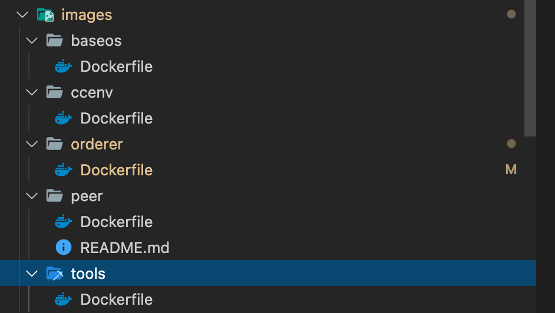

Dockerfile 生成 orderer 镜像¶
Dockerfile 是什么？¶
“Dockerfile 使用基本的基于 DSL（Domain Specific Language)）语法的指令来构建一个 Docker 镜像，我们推荐使用Dockerfile方法来代替docker commit，因为通过前者来构建镜像更具备可重复性、透明性以及幂等性。” –《 第一本Docker书（修订版） 》
dockerfile 是用来构建 docker 镜像的。
Dockerfile 在Fabric使用场景是什么？¶
Fabric使用Dockerfile构建 baseos ccenv orderer peer tools五个镜像。
对应dockerfile文件如下：

当用户运行 make all 命令，会调用 makefile 根据对应 dockerfile 文件生成镜像。 makefile 命令如下：
RELEASE_IMAGES = baseos ccenv orderer peer tools
DUMMY = .dummy-amd64-2.2.2-snapshot-db9a56fc1
.PHONY: docker
docker: $(RELEASE_IMAGES:%=%-docker)
.PHONY: $(RELEASE_IMAGES:%=%-docker)
$(RELEASE_IMAGES:%=%-docker): %-docker: build/images/%/$(DUMMY)
build/images/ccenv/$(DUMMY): BUILD_CONTEXT=images/ccenv
build/images/baseos/$(DUMMY): BUILD_CONTEXT=images/baseos
build/images/peer/$(DUMMY): BUILD_ARGS=--build-arg GO_TAGS=
build/images/orderer/$(DUMMY): BUILD_ARGS=--build-arg GO_TAGS=
build/images/%/$(DUMMY):
@echo "Building Docker image hyperledger/fabric-$*"
@mkdir -p $(@D)
# 以orderer为例，带入参数后命令：docker build --force-rm -f images/orderer/Dockerfile....
# docker build生成hyperledger/fabric-orderer:latest 镜像
docker build --force-rm -f images/$*/Dockerfile \
--build-arg GO_VER=1.14.12 \
--build-arg ALPINE_VER=3.12 \
--build-arg GO_TAGS= \
-t hyperledger/fabric-$* ./
# 生成hyperledger/fabric-orderer:2.2.2,生成hyperledger/fabric-orderer:2.2,
# hyperledger/fabric-orderer:amd64-2.2.2-snapshot-db9a56fc1 镜像
# 实际上三个镜像是相同的，只是名称不同。
docker tag hyperledger/fabric-$* hyperledger/fabric-$*:2.2.2
docker tag hyperledger/fabric-$* hyperledger/fabric-$*:2.2
docker tag hyperledger/fabric-$* hyperledger/fabric-$*:amd64-2.2.2-snapshot-db9a56fc1
# 生成amd64-2.2.2-snapshot-db9a56fc1文件
@touch $@
Dockerfile 执行的效果是什么？¶
build/images/目录下生成标记的amd64-2.2.2-snapshot-db9a56fc1文件。docker images会生成对应的镜像。以orderer为例：hyperledger/fabric-orderer:2.2.2,hyperledger/fabric-orderer:2.2,hyperledger/fabric-orderer:amd64-2.2.2-snapshot-db9a56fc1dhyperledger/latest四个镜像。 实际上四个镜像是相同的，只是名称不同。
orderer Dockerfile 做了什么？¶
orderer 的 Dockerfile 采用多阶段构建 (multistage builds)方式。 多阶段构建可以解决以下问题：
- 镜像层次多，镜像体积较大，部署时间变长
- 源代码存在泄露的风险 –《 Docker — 从入门到实践 》
orderer Dockerfile 的执行过程如下：
# 接受命令参数 GO_VER=1.14.12，ALPINE_VER=3.12
ARG GO_VER
ARG ALPINE_VER
####第一阶段####
# 以alpine:3.12为基础镜像，标记为 base 镜像
FROM alpine:${ALPINE_VER} as base
# 下载tzdata
RUN apk add tzdata
# 如果/etc/nsswitch.conf不存在，则生成/etc/nsswitch.conf，内容为'hosts: files dns'
RUN [ ! -e /etc/nsswitch.conf ] && echo 'hosts: files dns' > /etc/nsswitch.conf
####第二阶段####
# 以 golang:1.14.12-alpine3.12为基础镜像，标记为 golang 镜像
FROM golang:${GO_VER}-alpine${ALPINE_VER} as golang
#下载编译需要的包
RUN apk add \
gcc \
musl-dev \
git \
bash \
make;
# 复制源码到容器
ADD . $GOPATH/src/github.com/hyperledger/fabric
# 切换工作目录到容器源码目录
WORKDIR $GOPATH/src/github.com/hyperledger/fabric
####第三阶段####
# 以第二阶段的镜像 golang 为基础，，标记为 orderer 镜像
FROM golang as orderer
ARG GO_TAGS
# 编译 orderer出可执行文件，该指令运行go install 生成orderer可执行文件
RUN make orderer GO_TAGS=${GO_TAGS}
####第四阶段####
# 以第一阶段的镜像 base 为基础，，标记为 orderer 镜像
FROM base
# 设置配置文件环境变量
ENV FABRIC_CFG_PATH /etc/hyperledger/fabric
# 设置卷用于共享配置文件和证书信息等
VOLUME /etc/hyperledger/fabric
VOLUME /var/hyperledger
# 从第三阶段的镜像orderer拷贝可执行文件，证书，配置文件
COPY --from=orderer /go/src/github.com/hyperledger/fabric/build/bin /usr/local/bin
COPY --from=orderer /go/src/github.com/hyperledger/fabric/sampleconfig/msp ${FABRIC_CFG_PATH}/msp
COPY --from=orderer /go/src/github.com/hyperledger/fabric/sampleconfig/orderer.yaml ${FABRIC_CFG_PATH}
COPY --from=orderer /go/src/github.com/hyperledger/fabric/sampleconfig/configtx.yaml ${FABRIC_CFG_PATH}
# 暴露7050端口
EXPOSE 7050
# 运行容器后启动orderer
CMD ["orderer"]